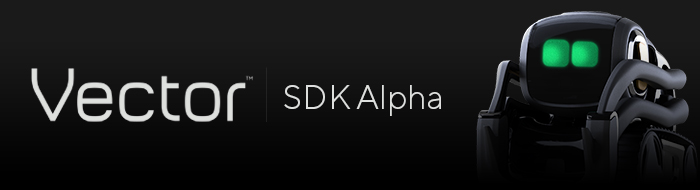

The Vector SDK gives you direct access to Vector's unprecedented set of advanced sensors, AI capabilities, and robotics technologies including computer vision, intelligent mapping and navigation, and a groundbreaking collection of expressive animations.
It's powerful but easy to use, complex but not complicated, and versatile enough to be used across a wide range of domains including enterprise, research, and entertainment.
Please note this is an alpha version of the Vector SDK that is not yet feature complete, but already provides access to many of Vector's hardware and software features. Please visit the official Anki Developer Forums for more details.
Get Started Initial Setup Install Linux Install macOS Install Windows Proto Troubleshooting